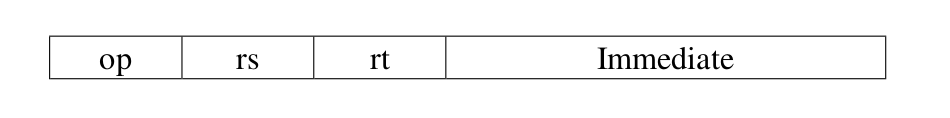
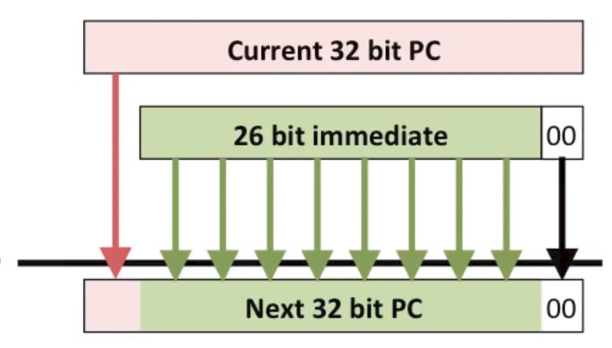

Instructions: Language of the Computer
以下皆以 MIPS Instruction Set 為例子
Design Principle
- Simplicity favours regularity（MIPS Instruction 的 Format 都相近）
- Smaller is faster（越少 Register 就越少電路）
- Make the common case fast（e.g. addi vs add，減少 Load instruction)
- Good design demands good compromises（根據需求有不同的format，但都是32bit且各個format盡量相似）
Register Usage
| Register Number | Conventional Name | Usage |
|---|---|---|
| $0 | $zero | Hard-wired to 0 |
| $1 | $at | Reserved for pseudo-instructions |
| $2 - $3 | $v0, $v1 | Return values from functions |
| $4 - $7 | $a0 - $a3 | Arguments to functions - not preserved by subprograms |
| $8 - $15 | $t0 - $t7 | Temporary data, not preserved by subprograms |
| $16 - $23 | $s0 - $s7 | Saved registers, preserved by subprograms |
| $24 - $25 | $t8 - $t9 | More temporary registers, not preserved by subprograms |
| $26 - $27 | $k0 - $k1 | Reserved for kernel. Do not use. |
| $28 | $gp | Global Area Pointer (base of global data segment) |
| $29 | $sp | Stack Pointer |
| $30 | $fp | Frame Pointer |
| $31 | $ra | Return Address |
| $f0 - $f3 | - | Floating point return values |
| $f4 - $f10 | - | Temporary registers, not preserved by subprograms |
| $f12 - $f14 | - | First two arguments to subprograms, not preserved by subprograms |
| $f16 - $f18 | - | More temporary registers, not preserved by subprograms |
| $f20 - $f31 | - | Saved registers, preserved by subprograms |
Format
R-format (Register)
| op | rs | rt | rd | shamt | funct |
|---|---|---|---|---|---|
| 6 bits | 5 bits | 5 bits | 5 bits | 5 bits | 6 bits |
- op: operation code (opcode)
- rs: first source register number
- rt: second source register number
- rd: destination register number
- shamt: shift amount (00000 for now)
- funct: function code (extends opcode)
example) add $t0, $s1, $s2
| op | rs | rt | rd | shamt | funct |
|---|---|---|---|---|---|
| special | $s1 | $s2 | $t0 | 0 | add |
| 0 | 17 | 18 | 8 | 0 | 32 |
| 000000 | 10001 | 10010 | 01000 | 00000 | 100000 |
I-format (Immediate)
| op | rs | rt | constant or address |
|---|---|---|---|
| 6 bits | 5 bits | 5 bits | 16 bits |
- Immediate arithmetic and load/store instructions
- rt: Target Register
- Constant:
- Address: offset added to base address in rs
example) addi $t0, $s1, -50
| op | rs | rt | constant or address |
|---|---|---|---|
| 8 | $s1 | $t0 | -50 |
| 8 | 17 | 8 | -50 |
| 001000 | 10001 | 01000 | 11111111 11001110 |
J-format (Jump)
| op | address |
|---|---|
| 6 bits | 26 bits |
Addressing
Immediate Addressing
運算元是常數,且包裝在指令內部

Register Addressing
運算元是暫存器
Base Addressing
運算元存放在記憶體中,而位址本身是暫存器和指令中常數的和

PC-relative Addressing
位址是 PC 和指令中常數的加總

Pseduodirect Addressing
跳躍位址是指令的 26 位元再加上 PC 較高的位元

Branch Addressing
PC: Program Counter
See: ISA 2.4 MIPS: Addresses in branches and jumps
Conditional Branch
根據比較結果改變程式流向，用 I-format (e.g. beq rs, rt, imm)
由於所有指令在記憶體中都是 4bytes 對齊的（一定都是 4 的倍數），最後 2 個 bit 沒有必要存，所以都是 0
Unconditional Branch
直接 jump 到指定的 Address 上

Procedure Call
Leaf Procedure
See:
Non-Leaf Procedure
Using stack to restore back registers
See:
- ISA 2.9 MIPS: Saving and restoring registers to the stack
- ISA 2.10 Procedure Calls: Saving Registers (example 1)
- ISA 2.11 Procedure Calls: Saving registers (example 2)
- ISA 2.12 Procedure call summary
Synchronization
兩個 procedure 對同一個 share variable 讀取寫入時，需要一個機制來協調兩者
See: